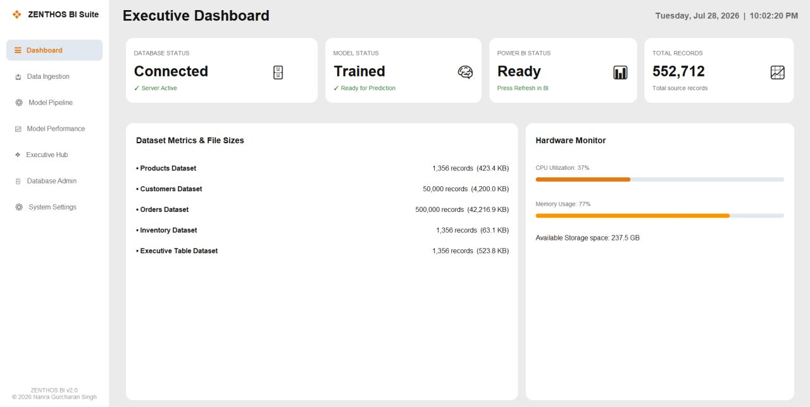
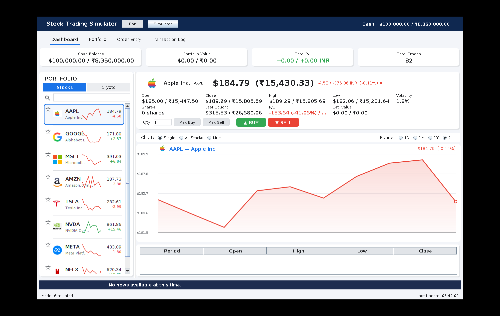
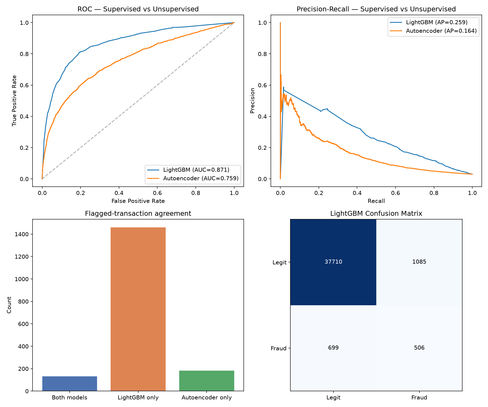
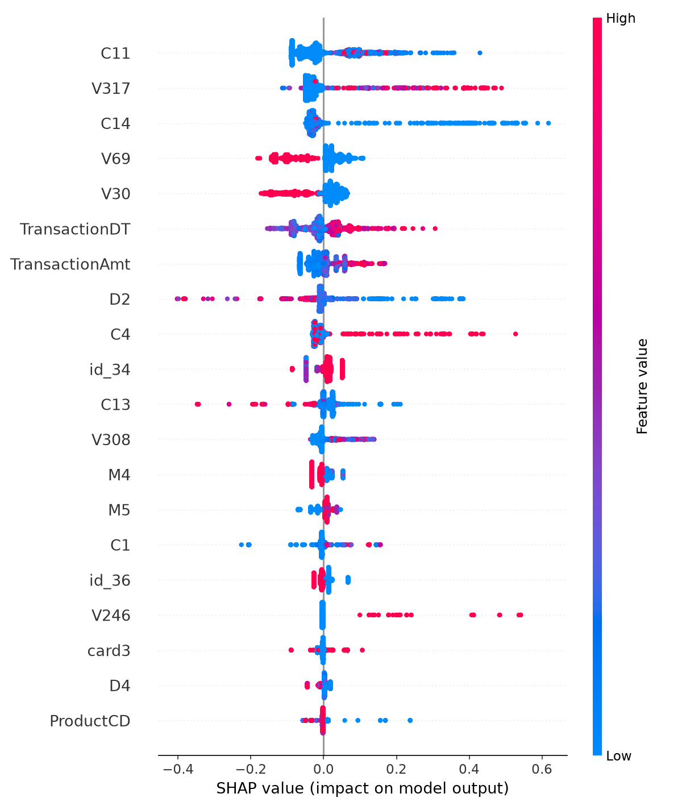
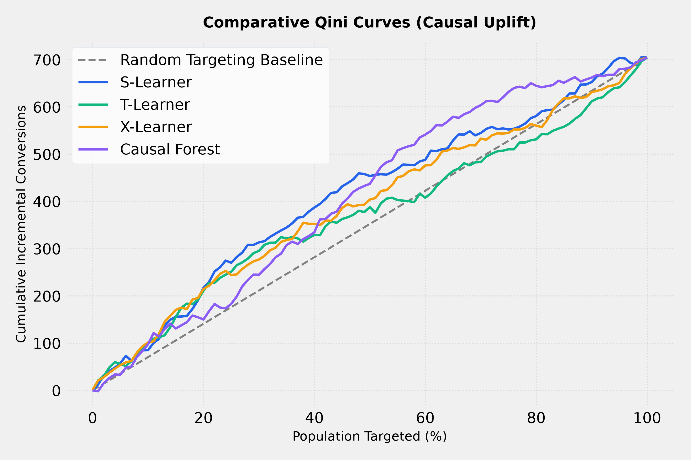
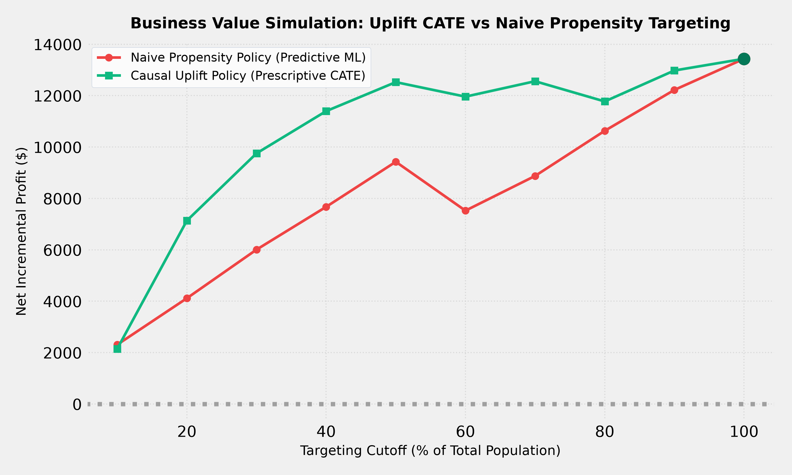
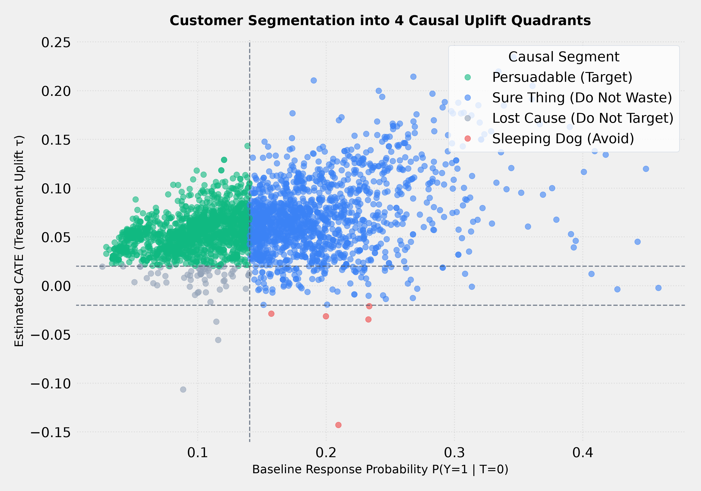

Field notes — Electronics & Computer Science, SAKEC · Second Year
I build systems that read live data and act on it.
Six independent builds spanning a retail ML pipeline, a physics-informed sensor-calibration engine, a self-learning cache written in C, a concurrent trading simulator, a dual-model fraud detection system, and a causal inference / uplift-modeling engine — together processing over 1.18 million rows of real and simulated data. Every metric on this page is pulled directly from a saved run of the actual code, not estimated.
Career stats — tap or hover any tile for context
source: saved run logsAbout this notebook
I'm a second-year Electronics & Computer Science student at SAKEC, working the seam between systems programming and machine learning — the point where a model's prediction has to survive contact with a real clock, a real cache, or a real sensor that drifts.
The six projects here were designed, built, and benchmarked independently, outside coursework, over the past year. Each one is a working prototype backed by a saved metrics file, not a slide-deck claim. Where a project is a research-grade proof of concept rather than production-hardened, that's stated plainly next to the numbers.
Zenthos BI — AI Command Center
An end-to-end retail intelligence pipeline: synthetic e-commerce data generation, a MySQL warehouse, five trained ML models, and a live executive dashboard built on top of it.

Live screenshot — AI Command Center dashboard, 7 engines online
Held-out test performance — best-seller classifier, from pipeline_metrics.json
What it does
Generates a realistic Amazon-style retail dataset (orders, customers, inventory, product catalog), loads it into MySQL, then trains a bank of models on top: a best-seller classifier, a demand forecaster, a price-elasticity recommender, an inventory optimizer, and an executive summarization layer that turns model output into plain-language recommendations. The dashboard is a from-scratch HTML/JS front end, not a Power BI export.
Real numbers, from the actual run
| Orders generated & loaded | 500,372 rows |
| Customer records | 50,001 rows |
| Product catalog (post-cleaning) | 1,357 SKUs |
| Total records unified in the warehouse | 551,730 rows |
| Best-seller classifier — held-out accuracy | 90.1% |
| Best-seller classifier — precision / recall | 90.5% / 77.0% |
| Train / test split | 1,084 / 272 samples |
The headline figure I'd defend in an interview is the 90.1% held-out
test accuracy from the saved pipeline_metrics.json
classification report — the live dashboard's telemetry-style numbers
are a UI display layer on top of it.
How it's built
- Python data generation & cleaning scripts (
Python/) - MySQL warehouse with a dedicated import pipeline
- scikit-learn models: classifier + regressors for forecast/price/inventory (
AI/) - A desktop control GUI (Tkinter) for running the pipeline end-to-end
- Static HTML/CSS/JS executive dashboard, no external charting framework
AERIS — Physics-Informed Air Quality Calibration
Low-cost air quality sensors (the kind that cost ₹2,000 instead of ₹20,00,000) drift badly. AERIS trains a calibration model that corrects them against real government reference monitors, then streams the correction live.

Live screenshot — real-time sliding telemetry vs. ground truth, Mumbai stations
Raw vs. calibrated error, µg/m³ — live replay through the trained LightGBM model
What it does
Stage A pulls two years of regional reanalysis weather/pollution data (Open-Meteo CAMS + ERA5) and pairs it against real ground station readings from CPCB, MPCB, and IITM monitors across Mumbai. Stage B simulates a low-cost sensor's physical response and drift characteristics. Stage C trains a LightGBM calibration model that maps "what the cheap sensor reads" to "what the government monitor would read," plus a separate multi-horizon forecasting model. A FastAPI service replays the dataset in real time over a WebSocket so the dashboard shows raw vs. calibrated vs. ground-truth as a live stream, including drift-alert detection.
Real numbers, from the live run
| Regional reanalysis records (Tier 1, 2-yr hourly) | 175,440 rows |
| Real ground-station records (Tier 2, 8 stations) | 126,997 rows |
| Combined climate + sensor dataset | 302,437 rows |
| Paired overlap timestamps for calibration | 50,372 hours |
| Raw sensor MAE vs. calibrated MAE (live demo run) | 111.8 → 1.4 µg/m³ |
| Cumulative error reduction from calibration | 98.7% |
Built as a research-grade simulation by design: the "sensor" stream is a physics-based model replaying the Stage B dataset, architected so it can swap to a real ESP32 + PMS5003/MQ135 sensor later without touching the ML or server code.
How it's built
- Two-tier data acquisition & merge pipeline (
a1–a3stages) - Sensor physics simulation with induced drift (Stage B)
- LightGBM calibration model + separate multi-horizon forecasting model
- FastAPI backend with an async WebSocket broadcaster
- SQLite for local persistence; designed for optional cloud sync
- Vanilla JS + Chart.js live dashboard, CPCB AQI computed in real time
NeuroCache — A Self-Learning Cache in C
Standard caches evict by fixed rules — least-recently-used, or least-frequently-used. NeuroCache replaces the rule with a small online model that predicts reuse probability per key, ranked live by an AVL tree.

Live screenshot — LRU vs. LFU vs. NeuroCache head-to-head, live event feed
Hit rate under a concept-drift workload, 50,000-event benchmark
What it does
NeuroCache covers a full data-structures-and-algorithms syllabus honestly — twelve structures (stacks, queues, singly and doubly linked lists, an AVL tree, hash tables with both chaining and open addressing, graphs with BFS/DFS/topo-sort, and four sorting algorithms) all doing real work inside one caching engine, not built as separate toy demos. On top of that sits the actual idea: a logistic-regression-style online learner scores each cached key's reuse probability, and an AVL tree keeps eviction candidates ranked in O(log n) as those scores update. A companion Python daemon applies the same principle to real OS process priority and RAM trimming, cross-platform (Windows/Linux).
Real numbers, from the project's own benchmark
| Benchmark size | 50,000 access events |
| Hit rate — Zipfian workload (LRU / LFU / NeuroCache) | 93.7% / 94.9% / 94.7% |
| Hit rate — concept-drift workload (LRU / LFU / NeuroCache) | 91.6% / 52.5% / 91.2% |
| NeuroCache advantage over LFU under drift | +38.7 points |
NeuroCache runs essentially tied with a tuned LFU on a stable Zipfian workload — the result worth highlighting is that it holds LRU-level adaptability the moment the access pattern shifts, exactly where LFU collapses.
How it's built
- Pure C core: 12 data structures, no external DSA libraries
- AVL tree keeps eviction order ranked as ML scores update live
- Python trace generators (Zipfian, drift, uniform) for reproducible benchmarks
- Cross-platform system daemon applying the same model to OS process scheduling
- Tkinter GUI for live visualization and side-by-side comparison
Real-Time Multithreaded Stock Trading Simulator
A Java Swing desktop app simulating a live market: independent price threads, an order-matching engine, and a persisted trade history — built to be honest about its concurrency, not just its UI.

Live screenshot — 12-instrument watchlist, live price chart, order entry
12 independently-threaded instruments, each on its own GBM price walk
What it does
Each of twelve simulated instruments (stocks and a few crypto tickers) runs its own scheduled price thread following a geometric Brownian motion random walk, ticking every 1.5 seconds independently of the UI thread. Orders go through a priority-queue-based limit order book that matches trades without blocking the interface, and every execution is persisted to a database asynchronously so the trade log never stalls the Swing event thread.
What I'd highlight in an interview
| Simulated instruments, independently threaded | 12 |
| Price update interval per instrument | 1.5s (GBM walk) |
| Named reentrant locks guarding shared state | 4 |
| Persistence layer | Embedded H2 (MySQL-compatible mode) |
The interesting part of this project isn't the GUI, it's the locking discipline underneath it — a dedicated lock per stock's price history, per trader's portfolio, and per order book, so concurrent order execution can't corrupt shared state or double-fill an order.
How it's built
- Java Swing GUI, strictly separated from the market simulation logic
ScheduledExecutorServiceper-stock price threadsPriorityQueue-based order book for limit-order matchingReentrantLocks guarding stock, trader, and order-book state- Embedded H2 database (MySQL-compatible mode) for trade persistence
- Custom checked exceptions for invalid orders / insufficient funds
Fraud Sentinel — Dual-Model Fraud Detection (IEEE-CIS)
A single "best" fraud model isn't the interesting part — the value is in where two fundamentally different models agree and disagree. Fraud Sentinel runs a supervised LightGBM classifier alongside an unsupervised PyTorch autoencoder on the same 200,000 real Kaggle transactions, side by side.

Live screenshot — ROC/PR curves, agreement analysis, and confusion matrix, straight from the saved run

SHAP summary — top 20 features driving the LightGBM fraud calls
ROC-AUC — supervised vs. unsupervised, same 200K-row test split
Fraud flags by source — where the two models agree vs. disagree
What it does
Built on the IEEE-CIS Fraud Detection dataset from Kaggle (~590K transactions, 434 raw features across a transaction table and an identity table). Two models catch fraud from opposite angles: a LightGBM classifier learns "what fraud looks like" from labeled examples, while a PyTorch autoencoder learns "what normal looks like" from legitimate transactions only, then flags anything it reconstructs badly. When both models flag the same transaction, confidence is high — when they disagree, that's exactly where human review adds value. The pipeline also runs SHAP to explain which features actually drove each fraud call.
Real numbers, from the saved metrics.json
| Transactions used (of 590K available) | 200,000 rows |
| Raw features merged (transaction + identity) | 434 |
| Features after cleaning | 423 |
| Fraud rate in the dataset | 3.01% |
| LightGBM — ROC-AUC / PR-AUC | 0.871 / 0.259 |
| LightGBM — precision / recall / F1 | 31.8% / 42.0% / 0.362 |
| Autoencoder — ROC-AUC / PR-AUC | 0.759 / 0.164 |
| Autoencoder — precision / recall / F1 | 38.2% / 10.0% / 0.158 |
| LightGBM training time | 7.7 sec |
| Autoencoder training time | 43.9 sec |
The honest framing: LightGBM is the stronger single model here, and I wouldn't oversell the autoencoder's raw accuracy — the point of keeping both is the disagreement, not a leaderboard score. On a severely imbalanced (3% fraud) dataset like this, accuracy alone is close to meaningless; ROC-AUC and PR-AUC are the numbers that actually matter.
How it's built
- Memory-optimized load: float32, chunked reads, explicit GC for a 683MB source CSV
- Label encoding for 31 categorical features, median imputation for the rest
- Columns >90% missing dropped outright rather than silently imputed
- LightGBM with
scale_pos_weighttuned for severe class imbalance - PyTorch autoencoder trained only on legitimate transactions
- SHAP summary plot for top-20 feature importance / explainability
Causal Uplift Engine — Who Should You Actually Target?
A propensity model answers "who's likely to buy?" — the wrong question for targeting. This engine estimates each customer's individual treatment effect, so campaigns stop wasting spend on Sure Things and Sleeping Dogs and start finding Persuadables.

Qini curves — all 4 models vs. random targeting baseline

Net profit — naive propensity vs. causal uplift, by budget cutoff

The 4 causal quadrants — Persuadables, Sure Things, Lost Causes, Sleeping Dogs
What it does
Four uplift architectures — S-Learner, T-Learner, X-Learner, and a Causal Forest (Double ML) — are trained on the classic 64,000-customer Kevin Hillstrom e-mail RCT, then stress-tested against a synthetic 20,000-row dataset with a known ground-truth treatment effect, so accuracy can be checked against the truth, not just cross-validated. A policy-simulation layer then turns model output into a dollar number: net profit if you targeted the top X% by uplift score vs. the top X% by raw propensity.
Real numbers, from metrics.json
| Hillstrom RCT rows used | 64,000 |
| Synthetic ground-truth rows (known CATE) | 20,000 |
| Qini score — winner (S-Learner) | +58.71 |
| Qini score — Causal Forest / X-Learner / T-Learner | +57.46 / +39.58 / +19.92 |
| Synthetic CATE fit — best Pearson r (X-Learner) | 0.896 |
| Profit lift, uplift vs. naive targeting (top 20%–40%) | +48.5% to +73.4% |
| Best dollar advantage (top 30% cutoff) | +$3,746.68 |
S-Learner wins on Hillstrom's large, balanced RCT sample — but on the synthetic benchmark with non-linear treatment effects, X-Learner takes it on both RMSE and correlation. The honest read: the "best" meta-learner depends on how non-linear your real treatment effect is, which is exactly why this compares four instead of shipping one.
How it's built
- S/T/X-Learners via CausalML + LightGBM base regressors
- Causal Forest DML via EconML, orthogonalized for confounding
- Qini curves & AUUC computed from scratch for model ranking
- SHAP TreeExplainer run on predicted CATE, not raw outcome
- Policy-simulation module converting uplift scores into unit-economics profit
- Dashboard: Plotly.js charts + live ROI sliders (
dashboard/)
Toolset, by way of these six projects
Languages
Python, Java, C, SQL
Machine learning
scikit-learn, LightGBM, PyTorch (autoencoders), CausalML, EconML (Double ML), SHAP explainability, feature engineering, online/SGD learning, model evaluation
Data & backend
Pandas, MySQL, SQLite, FastAPI, WebSockets, ETL pipeline design
Systems
Core data structures in C, multithreading & locking in Java, cross-platform process control
Interfaces
Tkinter, Java Swing, vanilla HTML/CSS/JS dashboards, Chart.js
Currently learning
Deeper time-series forecasting, model deployment/serving, and cleaner MLOps practice around these projects
Get in touch
Open to internship and project opportunities in AI/ML and applied systems work.